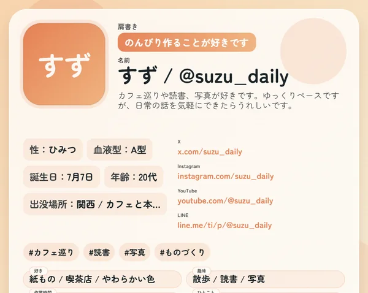
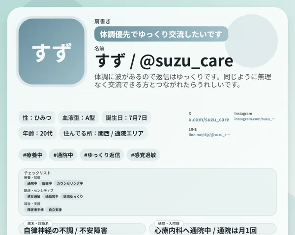
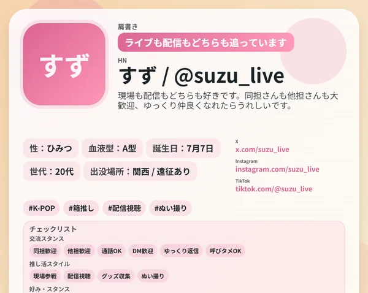

公開中日常用自己紹介フォーマット
普段のSNSで使いやすい自己紹介カードを、色・項目・表示内容まで自由にカスタマイズできます。
このフォーマットを開く
公開中闘病用自己紹介フォーマット
闘病中の自己紹介に合わせた専用フォーマットです。配慮事項やチェックリストも含めて、必要な情報をやさしく整理できます。
このフォーマットを開く
公開中推し活用自己紹介フォーマット
推し、推し歴、同担スタンス、交流方針などをまとめて、推し活仲間に伝えやすい形へ整えられます。
このフォーマットを開く